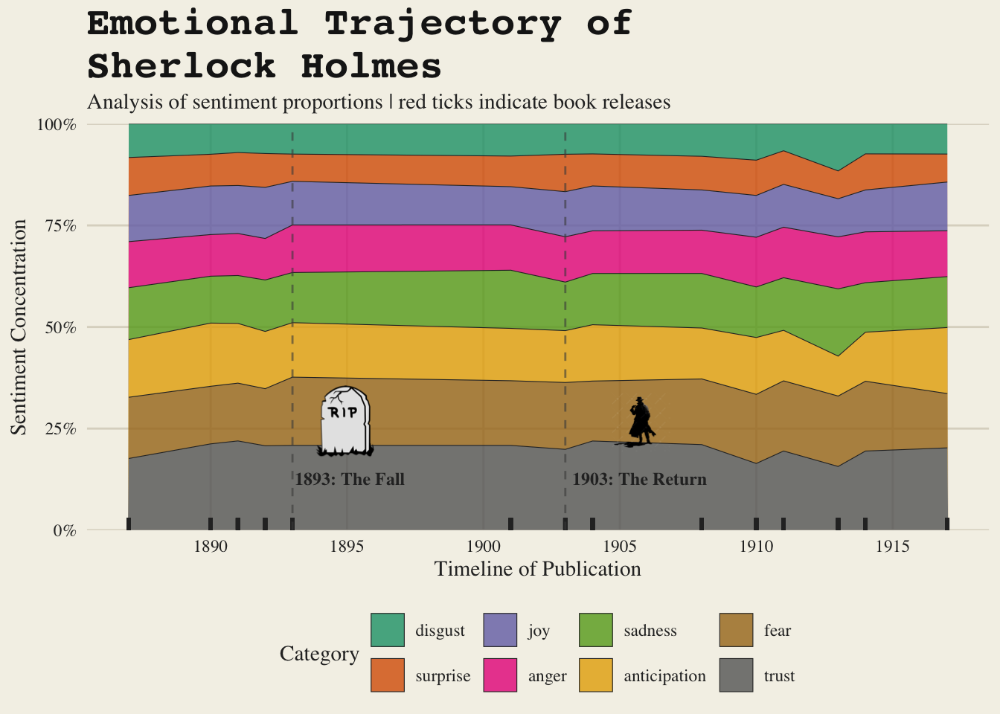

Code
library(tidyverse)
library(tidytext)
library(textdata)
library(rvest)Federica
18 Nov, 2025
I begin by loading the essential toolkit: tidyverse for data manipulation, tidytext for linguistic analysis, and rvest to scrape additional historical context from the web.
I import the primary dataset containing the full text of the Sherlock Holmes stories. To ensure consistent matching later on, I perform initial text cleaning by normalising all book titles to lowercase and removing any redundant whitespace.
Because the original data lacks chronological information, I scrape the Canon of Sherlock Holmes Wikipedia page. I extract the publication years and titles for each story, clean the strings, and join this metadata to the main text dataset. This step is crucial for transforming a simple text analysis into a time series-esque study.
holmes_wiki <- read_html("https://en.wikipedia.org/wiki/Canon_of_Sherlock_Holmes") |>
html_elements("p+ ol li , p+ ol a") |>
html_text() |>
as_tibble() |>
filter(!is.na(str_extract(value, "\\d{4}"))) |>
mutate(date = str_extract(value, "\\d{4}")) |>
mutate(title = str_extract(value, '^"?([^"(]+)"?')) |>
mutate(title = str_replace_all(title, '"', '')) |>
mutate(title = tolower(title)) |>
mutate(title = str_squish(title))
holmes <- holmes |>
left_join(holmes_wiki, by = c("book" = "title"))Using the tidytext package, I break the text down into individual words (tokens) and remove common “stop words” that don’t carry emotional weight. I then map the remaining words to the NRC Sentiment Lexicon. By grouping the data by year and sentiment, I calculate the proportional frequency of emotions to see how the “mood” of the writing evolved over time.
nrc_sentiments <- tidytext::get_sentiments("nrc") |>
filter(sentiment != "positive", sentiment != "negative")
sent_data <- holmes |>
tidytext::unnest_tokens(words, text) |>
anti_join(stop_words, by = c("words" = "word")) |>
left_join(nrc_sentiments, by = c("words" = "word"), relationship = "many-to-many") |>
group_by(date, sentiment) |>
summarize(n = n()) |>
filter(!is.na(sentiment)) |>
mutate(prop = n / sum(n))|>
mutate(date = as.numeric(date))library(cowplot)
library(magick)
library(ggtext)
sent_data_ordered <- sent_data |>
ungroup() |>
mutate(sentiment = reorder(sentiment, prop, FUN = mean))
img_death_url <- "https://cdn.pixabay.com/photo/2013/07/13/12/32/tombstone-159792_1280.png"
img_return_url <- "https://png.pngtree.com/png-clipart/20240316/original/pngtree-sherlock-holmes-silhouette-png-image_14599690.png"
p <- sent_data_ordered |>
ggplot(aes(x = date, y = prop, fill = sentiment)) +
geom_area(alpha = 0.8, color = "#2c2c2c", linewidth = 0.2) +
geom_rug(sides = "b", color = "#2c2c2c", linewidth = 1) +
geom_vline(xintercept = c(1893, 1903),
linetype = "dashed", color = "#4a4a4a", alpha = 0.6) +
scale_fill_brewer(palette = "Dark2") +
scale_y_continuous(labels = scales::percent, expand = c(0, 0)) +
scale_x_continuous(breaks = seq(1885, 1930, 5)) +
labs(
title = "Emotional Trajectory of \nSherlock Holmes",
subtitle = "Analysis of sentiment proportions | red ticks indicate book releases",
x = "Timeline of Publication",
y = "Sentiment Concentration",
fill = "Category"
) +
theme_minimal(base_family = "serif") +
theme(
plot.background = element_rect(fill = "#f4f1e8", color = NA),
panel.background = element_rect(fill = "#f4f1e8", color = NA),
panel.grid.major = element_line(color = "#dcd7c9"),
panel.grid.minor = element_blank(),
text = element_text(color = "#2c2c2c"),
plot.title = element_text(size = 20, face = "bold", color = "#1a1a1a", family = "mono"),
legend.position = "bottom",
axis.text = element_text(color = "#2c2c2c")
)
cowplot::ggdraw(p) +
draw_image(img_death_url, x = 0.315, y = 0.36, width = 0.06, height = 0.1) +
draw_label("1893: The Fall", x = 0.35, y = 0.33, fontfamily = "serif", size = 9, fontface = "bold", colour = "#2c2c2c") +
draw_image(img_return_url, x = 0.61, y = 0.36, width = 0.06, height = 0.1) +
draw_label("1903: The Return", x = 0.64, y = 0.33, fontfamily = "serif", size = 9, fontface = "bold", colour = "#2c2c2c")
This visualisation reveals a surprisingly consistent narrative recipe across Arthur Conan Doyle’s stories, showing that the core emotional makeup of the canon remained stable even after Holmes’s high-profile death in 1893 and resurrection ten years later in 1903. By utilising the NRC Sentiment Lexicon, the analysis highlights that trust, anticipation, and fear are the most dominant emotional categories, effectively capturing the essential elements of detective fiction. While the proportions remain steady over several decades, subtle fluctuations - such as the slight expansion of fear or sadness toward the end of the timeline - provide a glimpse into shifting writing styles or the external influence of the early 20th century.
I acquired this dataset from this tidytuesday repo. This week we’re exploring the complete line-by-line text of the Sherlock Holmes stories and novels, made available through the {sherlock} R package by Emil Hvitfeldt. The dataset includes the full collection of Holmes texts, organized by book and line number, and is ideal for stylometry, sentiment analysis, and literary exploration.
“The name is Sherlock Holmes and the address is 221B Baker Street.” Holmes is a consulting detective known for his keen observation, logical reasoning, and use of forensic science to solve complex cases. Created by Sir Arthur Conan Doyle, Holmes has become one of the most famous fictional detectives in literature.
Thank you to Darakhshan Nehal for curating this week’s dataset.
holmes.csv| variable | class | description |
|---|---|---|
| book | character | Title of the Sherlock Holmes story or novel. |
| text | character | Line of text extracted from the book. |
| line_num | integer | Narrative-preserving line index. When you load the data, blank lines ("") may appear as NA. |